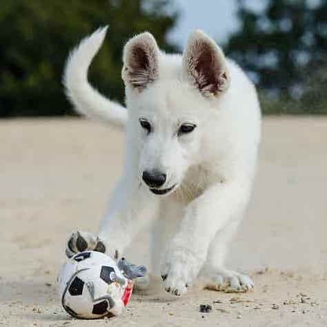

Overview: Dogs are widely loved and appreciated as household pets because they're impossible to resist, but many people are often unfamiliar with how much work it is to actually own and raise a dog. Dogs make great pets for those of us who long for a companion to be active with and those who want to do almost everything with their pet! This also comes with the big responsibility of making sure you're available to cater to your dog's needs at all times if your dog does not have access to the outdoors without your assistance or a collar and leash. This can be a problem for people who are not always home or don't have someone readily available to take care of your dog when you can't, thus making dogs a little bit high maintenance if you're not normally used to the responsibility.
 Exercise & Diet: Depending on what breed, what size dog you have, or your dog's threshold for physical activity, the amount of exercise your dog needs will vary based on a number of factors, but as a general rule of thumb, your dog should always be getting between 30 minutes to 2 hours of exercise each day. Although some dogs may need more than that, it's important to pay attention to your animal and understand their own cues for telling you they want to go play, or that they have had enough. A common cue is barking, many dogs bark to inform their owner that they need more play time. As it important as it is to encourage play time and exercising frequently, dogs might be unaware of their physical limitations causing them to over-exert themselves, so owners must be conscious of their dogs and their limitations for exercise. Many flat-nosed dog breeds such as Pugs have breathing problems if they are over-exerted and their exercise routines may be a bit slower-paced than that of a Siberian Husky or German Shepherd. See your veterinarian to get a more accurate idea of how long and often to exercise your dog based on their own personal health history. Diet and exercise work hand-in-hand to ensure your dog has the greatest possible quality of life, which is why picking the best type of food for your dog is crucial to good health. It's best to check with your vet to get an overview of how much you should be feeding them, which is based on a number of factors such as size, activity level, underlying health issues, etc. Wet food and dry food both have their benefits and drawbacks. Wet food is ideal for overweight dogs since it contains fewer carbohydrates, and dry food is better for your dog's dental health. Finding a good balance of wet and dry food for your dog's specific needs could be ideal if you're looking to yield the benefits of both options.
Common Health Issues: Like humans, dogs can unfortunately develop cancers as they age. Treating cancer can take the form of surgery, chemotherapy, or radiation treatment. It is very important to take your dog to the veterinarian at least once a year for annual checkups to catch any cancers your dog may have as early as possible. Take your dog to the vet immediately if you notice any unusual lumps or spots on your dog's skin, especially around the ears and eyes. Obesity is another common health issues that can contribute to other conditions that can be serious and fatal, such as arthritis, heart disease, kidney disease, etc. It's important to combat obesity by feeding your dog a high protein and low carbohydrate diet, as too many carbohydrates contribute to weight gain, and by playing with your dog and exercising them within their threshold at least once a day.